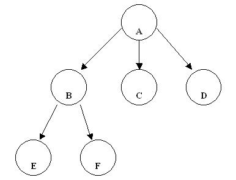
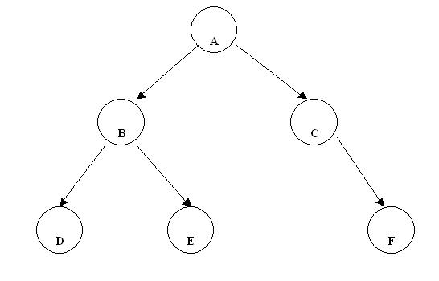

Igual que la lista, el árbol es una estructura de datos. Son muy eficientes para la búsqueda de información. Los árboles soportan estructuras no lineales.
Algunos conceptos de la estructura de datos tipo árbol:
Nodo hoja: Es un nodo sin descendientes (Nodo terminal)
Ej. Nodos E ? F ? C y D.
Nodo interior: Es un nodo que no es hoja.
Ej. Nodos A y B.
Nivel de un árbol: El nodo A está en el nivel 1 sus descendientes directos están en el nivel 2 y así sucesivamente.
El nivel del árbol está dado por el nodo de máximo nivel.
Ej. Este árbol es de nivel 3.
Grado de un nodo: es el número de nodos hijos que tiene dicho nodo (solo se tiene en cuenta los nodos interiores)
Ej. El nodo A tiene grado 3.
El nodo B tiene grado 2.
Los otros nodos no tienen grado porque no tienen descendientes.
Grado de un árbol: Es el máximo de los grados de todos los nodos de un árbol.
Ej. El grado del árbol es 3.
Longitud de camino del nodo x: Al número de arcos que deben ser recorridos para llegar a un nodo x, partiendo de la raiz.
La raiz tiene longitud de camino 1, sus descendientes directos tienen longitud de camino 2, etc. En forma general un nodo en el nivel i tiene longitud de camino i.
Árbol binario: Un árbol es binario si cada nodo tiene como máximo 2 descendientes.
Para cada nodo está definido el subárbol izquierdo y el derecho.
Para el nodo A el subárbol izquierdo está constituido por los nodos B, D y E. Y el subárbol derecho está formado por los nodos C y F.
Lo mismo para el nodo B tiene el subárbol izquierdo con un nodo (D) y un nodo en el subárbol derecho (E).
El nodo D tiene ambos subárboles vacíos.
El nodo C tiene el subárbol izquierdo vacío y el subárbol derecho con un nodo (F).
Árbol binario perfectamente equilibrado: Si para cada nodo el número de nodos en el subárbol izquierdo y el número de nodos en el subárbol derecho, difiere como mucho en una unidad.
Hay que tener en cuenta todos los nodos del árbol.
El árbol de más arriba es perfectamente equilibrado.
Ej. árbol que no es perfectamente equilibrado:
El nodo A tiene 3 nodos en el subárbol izquierdo y solo uno en el subárbol derecho, por lo que no es perfectamente equilibrado.

Árbol binario completo: Es un árbol binario con hojas como máximo en los niveles n-1 y n (Siendo n el nivel del árbol)
Los dos árboles graficados son completos porque son árboles de nivel 3 y hay nodos hoja en el nivel 3 en el primer caso, y hay nodos hoja en los niveles 3 y 2 en el segundo caso.
Ej. Árbol binario no completo:
Hay nodos hoja en los niveles 4, 3 y 2. No debería haber nodos hojas en el nivel 2.
Árbol binario ordenado: Si para cada nodo del árbol, los nodos ubicados a la izquierda son inferiores al que consideramos raíz para ese momento y los nodos ubicados a la derecha son mayores que la raíz.

Ej. Analicemos si se trata de un árbol binario ordenado:
Para el nodo que tiene el 50:
Los nodos del subárbol izquierdo son todos menores a 50? 8, 25, 30 Si
Los nodos del subárbol derecho son todos mayores a 50? 70 Si.
Para el nodo que tiene el 25:
Los nodos del subárbol izquierdo son todos menores a 25? 8 Si
Los nodos del subárbol derecho son todos mayores a 25? 30 Si.
No hace falta analizar los nodos hoja. Si todas las respuestas son afirmativas podemos luego decir que se trata de un árbol binario ordenado.